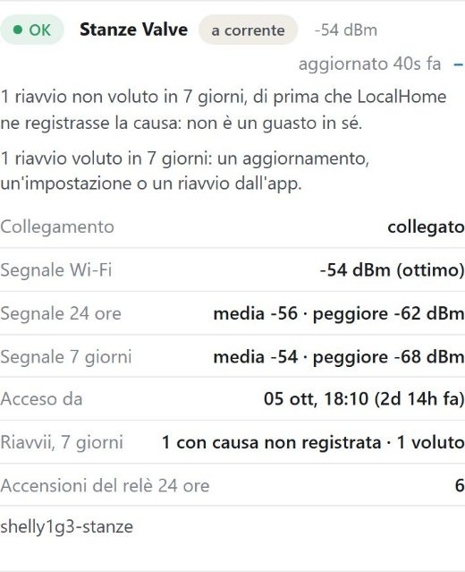
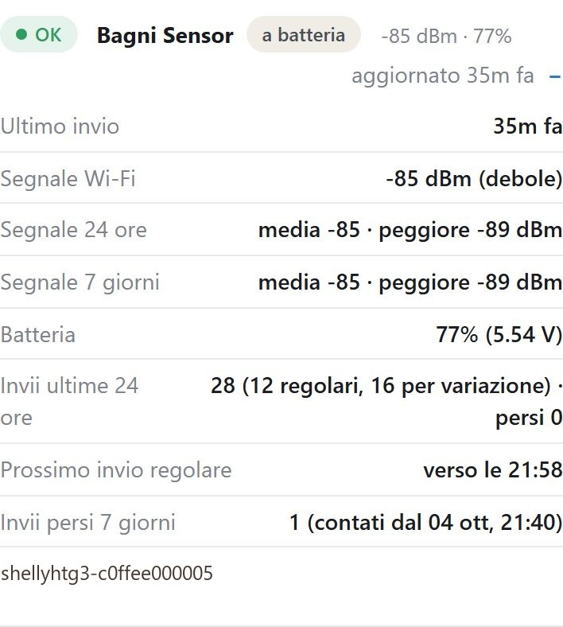

Guida per l'amministratore dell'impianto
Come funzionano il software e l'impianto, come si collegano gli Shelly, cosa fa quando manca qualcosa. Il software lo forniamo noi.
- LocalHome, sulla scheda in casa, apre e chiude le valvole delle due zone - Stanze e Bagni - secondo la temperatura e la programmazione di ognuna; comanda anche bypass, deumidificatore e VMC. Tutto in casa, senza cloud.
- Due pagine: la home per chi abita, l'admin per chi gestisce (sezione 1).
- Se la scheda si ferma, gli Shelly spengono da soli valvole e deumidificatore entro pochi minuti: niente resta acceso senza controllo (sezione 6).
- Per installare: sezioni 11-15, poi la prova della 17. Se qualcosa non va: sezione 22.
Le parole che tornano
| Shelly | Il piccolo modulo Wi-Fi che accende e spegne una valvola (Shelly 1) o misura temperatura e umidità (H&T). |
| Relè | L'interruttore dentro lo Shelly. Acceso = valvola aperta; il bypass al contrario (sezione 3). |
| Obiettivo | La temperatura che una zona deve avere in quell'ora. |
| Comfort ed Economy | I due livelli di obiettivo: Economy fa pause più lunghe e consuma meno (sezione 2). |
| Isteresi | Quanto la stanza si allontana dall'obiettivo prima che la valvola riparta (sezione 2). |
| Comando a tempo | LocalHome dice allo Shelly "acceso per 15 minuti" e lo ripete: se la scheda si ferma, lo Shelly spegne da solo (sezione 6). |
| Broker MQTT | Il "centralino" sulla scheda attraverso cui si parlano gli Shelly e LocalHome. |
| ID e prefisso | Il nome con cui uno Shelly si presenta (es. shelly1g3-…): va scritto in admin
(sezioni 12, 13, 21). |
| Modalità diagnosi | Per le prove: termostato fermo, ogni relè si comanda a mano (sezione 10). |
| Watchdog | Un controllo automatico che riavvia quello che si blocca (sezioni 6 e 8). |
| Riquadro | Nella home, il blocco di una zona o di un dispositivo. |
Come funziona
1. L'impianto
La scheda (Arduino UNO Q) fa girare LocalHome e il broker MQTT: gli Shelly parlano con lei sulla rete di casa, senza cloud. Internet serve solo per l'ora esatta (sezione 7).
| Cosa | Dispositivo |
|---|---|
| Sensore Stanze, Bagni, esterno | Shelly H&T Gen3, a batteria (sezione 5) |
| Valvola Stanze, Bagni | Shelly 1 Gen3 |
| Bypass bagni, deumidificatore | Shelly 1 Gen3 (sezione 3) |
| VMC Maico AERA 320 | Shelly Dimmer 0/1-10V Gen3 (sezione 4) |
| Pagina | Per chi, cosa |
|---|---|
Home http://<scheda>.local:5000 | Chi abita: temperature, programmazione, fuori casa, VMC, deumidificatore. Un'etichetta in alto dice se c'è qualcosa da controllare. |
Admin …/climate-admin | Chi gestisce: Impianto (stagione, zone, regolazioni), Dispositivi, Scheda (stato sistema, impostazioni), Strumenti (diagnosi e manutenzione). In alto i riquadri della panoramica e il link a questa guida. |
2. Termostato e stagioni
- Stagione: una per tutto l'impianto, inverno scalda ed estate raffresca. Si cambia in admin → Stagione, scrivendo il nome della nuova per conferma.
- Programmazione: un obiettivo per ogni ora della settimana, per zona e stagione, disegnato dalla home (Modifica). Un'ora senza obiettivo (✕), o una zona senza temperatura, tiene la valvola chiusa.
- Dalla home, per ogni zona: Oraria (segue la settimana), Manuale (una temperatura) o Spenta, per 2, 4, 8 o 24 ore, fino al prossimo cambio o finché non la cambi; poi torna Oraria.
- Fuori casa (1 giorno, 3, una settimana o fino a una data): tutto spento tranne il bypass, la VMC a Minimo, Notte o spenta; niente cambia fino a Sono rientrato, poi riparte la settimana.
- Ogni 60 secondi il termostato ricontrolla le zone e lo stato vero dei relè; una modifica dalla home vale subito.
- Cambio dell'ora: la settimana segue l'orologio (a fine ottobre l'ora delle 2 viene due volte, a fine marzo mai); "per 2 ore" sono due ore vere.
Quando la valvola si apre e quando si chiude
All'obiettivo (linea nera) la valvola si ferma; si riapre solo oltre la fascia gialla, dove resta com'era: così non apre e chiude per un decimo di grado. Economy ha la fascia larga il doppio: pause più lunghe, meno consumo. Valori di serie, regolabili (sezione 20).
aperta: Shelly acceso, passa l'acqua · come prima: continua quello che faceva · chiusa: Shelly spento
3. Bagni, bypass e deumidificatore
Gli Shelly, stagione per stagione
| Shelly | Inverno | Estate |
|---|---|---|
| Valvola Stanze | si apre per scaldare, secondo la temperatura (sezione 2) | si apre per raffrescare, secondo la temperatura |
| Valvola Bagni | si apre per scaldare, secondo la temperatura | chiusa: i pannelli del bagno farebbero condensa. Si apre solo col deumidificatore acceso, per dargli l'acqua fredda |
| Bypass bagni (normalmente aperto) | aperto: Shelly spento | chiuso: Shelly acceso, tutta la stagione, anche fuori casa |
| Deumidificatore | sempre spento | dalla home a tempo, o da solo se attivato; sempre insieme alla valvola Bagni |
| VMC (Dimmer) | il suo programma e le sue velocità (sezione 4), uguali nelle due stagioni | |
Fuori casa, in tutte e due le stagioni: valvole chiuse, deumidificatore spento, bypass come vuole la stagione, VMC a Minimo, Notte o spenta.
Se la scheda si ferma, se manca la corrente
| Shelly | La scheda si ferma | Torna la corrente (Shelly riacceso) |
|---|---|---|
| Valvole Stanze e Bagni | si chiudono da sole entro 15 minuti | ripartono chiuse; poi decide LocalHome |
| Deumidificatore | si spegne da solo entro 8 minuti, sempre prima della sua acqua | riparte spento e resta spento, con la valvola Bagni chiusa: l'accensione a tempo finisce, come per un elettrodomestico dopo un black-out. Si riaccende dalla home; da solo solo con l'accensione automatica attiva |
| Bypass bagni | resta com'è (nessun timer): d'estate resta chiuso | torna com'era prima |
| VMC (Dimmer) | resta alla velocità che aveva (nessun timer) | come dice la sua app (stato all'accensione) |
Il bypass è normalmente aperto: home e admin lo dicono aperto o chiuso. Il deumidificatore si spegne sotto il 50% di umidità di Stanze e si accende dal 55%, al massimo 8 ore (sezione 20). Da quale zona prende l'acqua e se il bypass è normalmente aperto: admin → Dispositivi → Interruttori extra; impostazioni degli Shelly: sezione 18. Perché e come: sezione 6.
4. VMC
- Dalla home: cinque livelli - Minimo, Notte, Giorno, Alto, Massimo - e una barra per la regolazione fine. Sotto il nome il riquadro dice sempre perché va a quella velocità.
- Per un po': Massimo per 30 minuti, 1 o 2 ore, o Ospiti (Alto per 3 ore); poi torna com'era.
- Programma (nel riquadro della VMC): Manuale, Giorno e notte (giorno 7–22), Fuori per lavoro, Mattina e sera intense, Personalizzato. Cambia velocità solo all'inizio della fascia dopo: una scelta a mano resta fino ad allora.
- Percentuali dei livelli (di serie 10, 25, 50, 75, 100%), automatismi (spenti di serie) e filtri (avviso 14 giorni prima): sezione 20. La AERA 320 gira anche al 5%, a 0% si spegne.
- Fuori casa: Minimo, Notte (di serie) o Spenta, scelta nel foglio. Vince su tutto, dall'app Shelly torna com'era entro un minuto, al rientro riprende il suo programma. Spenta risparmia, ma l'aria ristagna.
- Se la scheda si ferma o si riavvia, la VMC resta alla velocità che aveva: nessun timer, ventilare non è mai un rischio. Dopo un black-out riparte com'era (impostazioni nella sezione 19); quando LocalHome riparte, rimette la velocità della fascia in corso.
La VMC: Maico AERA 320
LocalHome ne comanda solo la velocità, con il segnale 0-10 V dello Shelly Dimmer (sezione 19). Il resto lo fa la VMC da sola, con i suoi sensori: LocalHome non lo comanda e non lo vede.
| Funzione della VMC | Cosa fa |
|---|---|
| Bypass estivo (free cooling) | Una serranda manda l'aria attorno allo scambiatore, senza recuperare calore. Si apre da sola con dentro più di 22 °C, dentro più caldo che fuori e fuori più di 16 °C (l'aria fresca della notte raffresca), oppure con dentro meno di 22 °C e fuori più caldo (l'aria tiepida scalda). |
| Antigelo | Con l'esterno troppo freddo protegge lo scambiatore: può girare un solo ventilatore. Non è un guasto, né di LocalHome: torna da sola quando fuori si scalda. |
| Manutenzione | Filtri della VMC e delle bocchette almeno ogni 3 mesi, scambiatore ogni anno (sostituzione ogni 6), tubazioni ogni 3 anni. Acqua tiepida e sapone neutro, niente getti in pressione. |
Per questo il raffrescamento notturno (sezione 20) alza la velocità solo con fuori almeno 16 °C: è lì che il bypass è aperto e l'aria fresca entra davvero. Sotto, passerebbe dallo scambiatore e si scalderebbe con l'aria che esce.
5. Sensori: Shelly H&T Gen3
Stesso sensore per Stanze, Bagni ed esterno: temperatura e umidità, display e-paper, 4 pile AA (circa un anno) o USB-C, 70 × 70 mm. Scheda e foto Shelly.
Dorme quasi sempre. A batteria invia subito quando temperatura o umidità cambiano oltre le soglie, e ogni 2 ore comunque (misurato: puntuale al minuto). Ogni invio porta il valore esatto, al decimo: le soglie decidono solo quando parla. In casa stabile parla quasi solo ogni 2 ore: "aggiornato 1 h 50 min fa" è normale. LocalHome riconosce da solo come è alimentato.
| A batteria | Alimentato (USB-C) | |
|---|---|---|
| Quando invia | a ogni variazione oltre le soglie, e ogni 2 ore | la temperatura ogni 12 minuti circa |
| "Aggiornato … fa" normale | fino a 2 ore | fino a 12 minuti circa |
| In ritardo | dopo 4 ore senza invii | dopo 30 minuti |
| Batteria | avviso in home al 20% e al 10%; in admin Batteria scarica al 10% | non conta (senza pile risulta 0%: normale) |
| Se perde l'alimentazione | - | con le pile dentro passa a batteria; senza, si spegne |
| Nell'app Shelly | Valore |
|---|---|
| MQTT | come la sezione 13 |
| Soglia temperatura | 0,5 °C (già di serie) |
| Soglia umidità | 1% (di serie è 5%: da cambiare) |
Con il 5%, un cambio di umidità più piccolo arriva solo al battito delle 2 ore: il deumidificatore, che si ferma sotto il 50%, può restare acceso fino a 2 ore di troppo. Soglie più strette consumano più batteria, soprattutto con Wi-Fi debole.
- Cambiare le pile basta: niente da azzerare in LocalHome.
- Segnale Wi-Fi debole: non è un problema finché gli invii arrivano, ma consuma più batteria. Avvicinarlo al router o aggiungere un ripetitore.
- Valori impossibili (fuori da -30…70 °C o 1…100%) vengono scartati e segnalati: per il termostato è come se il sensore non ci fosse.
6. Sicurezze
Il comando a tempo
LocalHome non dice "accendi" ma "accendi per 15 minuti", ripetuto ogni 5 minuti. Se la scheda si ferma, lo Shelly chiude la valvola da solo entro 15 minuti. Il deumidificatore ha 8 minuti, rinnovati ogni 2 e mezzo: così si spegne sempre prima della valvola che gli porta l'acqua, e non gira mai a secco. Il bypass bagni no (sezione 18): deve restare com'è.
▼ = LocalHome rinnova il comando; le parentesi vanno dall'ultimo rinnovo allo spegnimento. In questo esempio la scheda si ferma al minuto 12: il deumidificatore si spegne al 18:40, la valvola al 25. In qualunque momento si fermi, il deumidificatore si spegne entro 8 minuti, la valvola non prima di 9 minuti e 40: il deumidificatore non gira mai senza la sua acqua.
Per aprire comunque una valvola col sensore fermo (per esempio mentre si cambiano le pile): modalità diagnosi (sezione 10). Provato sulla scheda di produzione con Plus 1 (4/10) e 1 Gen3 (5/10); soglie, cambi d'ora della settimana e deumidificatore con la sua acqua sui relè veri (13/10).
Tutte le sicurezze
| Sicurezza | Cosa fa | Contro cosa |
|---|---|---|
| Negli Shelly - funzionano anche a scheda spenta | ||
| Comando a tempo | Valvole "accese per 15 minuti", deumidificatore per 8, rinnovati finché LocalHome c'è | Scheda ferma, rete o Wi-Fi giù |
| Spegnimento automatico | Lo stesso tempo impostato nell'app (sezione 14): 15 minuti, il deumidificatore 8 | Uno Shelly acceso da altri, o riavviato |
| Stato all'accensione | Valvole e deumidificatore ripartono spenti; il bypass e la VMC com'erano. Le valvole le riapre LocalHome se servono, il deumidificatore resta spento finché non lo si riaccende | Black-out |
| In LocalHome - a ogni ciclo, ogni 60 secondi | ||
| Stato vero dei relè | Rilegge cosa fa davvero ogni Shelly: cambiato dall'app, torna com'era entro un minuto | Comandi da altri, comandi persi |
| Sensore | Senza temperatura valida la valvola resta chiusa; valori impossibili scartati; muto da 4 ore resta com'è, dopo altre 3 (Chiusura di sicurezza) si chiude | Pile scariche, sensore guasto o lontano |
| Bagni d'estate | Mai raffrescati: aperti solo per l'acqua del deumidificatore | Condensa nei bagni |
| Bypass | Sempre come vuole la stagione, anche fuori casa | Cambi a mano dimenticati |
| Deumidificatore | Solo d'estate, sempre con la sua valvola; si spegne sotto il 50% di umidità, al più tardi dopo 8 ore, fuori casa | Funzionamento a secco o inutile |
| Fuori casa | Tutto spento tranne il bypass; niente cambia fino al rientro | Consumi a casa vuota |
| Troppi scatti | Oltre 48 accensioni di un relè in un giorno: segnalato | Usura di relè e valvole |
| Shelly che non risponde | Nessun comando a vuoto; al ritorno rimesso nello stato giusto | Shelly spento o lontano |
| Cambio dell'ora | La settimana segue l'orologio (a fine ottobre le 2 vengono due volte, a fine marzo mai); le durate ("per 2 ore") sono tempo vero | Due notti l'anno |
| Nella scheda | ||
| Watchdog di LocalHome | Bloccato, o oltre 512 MB di memoria: riavviato entro 2 minuti. Gli Shelly non se ne accorgono | Blocchi del programma |
| Watchdog della scheda | Sistema bloccato: la scheda si riavvia da sola entro 30 secondi | Blocchi del sistema |
| Watchdog Wi-Fi | Ricollega il Wi-Fi, riavvia la rete, alla fine la scheda (sezione 8) | Router e Wi-Fi |
| Orologio | Finché l'ora non è corretta da internet lo storico è in pausa e la home avvisa (sezione 7) | Ora sbagliata dopo un black-out |
| Storico | Limiti di giorni e di spazio, pulizia a piccoli passi (sezione 9) | Disco pieno |
7. Riavvio e black-out
| Cosa | Misurato sulla scheda di produzione (9/10) |
|---|---|
| Riavvio di LocalHome (pulsante in alto nell'admin) | risponde dopo circa 5 secondi |
| Riavvio della scheda | dall'accensione: LocalHome risponde dopo circa 20 secondi, gli Shelly a corrente si ricollegano dopo circa 40, l'ora si corregge da internet entro un minuto |
| Cosa resta | stagione, programmazione, fuori casa con la sua scadenza, regolazioni, impianto; l'ultimo dato di ogni sensore con la sua età vera, usato finché ha meno di 4 ore |
| Durante il riavvio | nessuna valvola si apre; la VMC resta com'era |
L'ora: la scheda non ha batteria per l'orologio. Riparte dall'ora in cui si è spenta e si corregge da internet; finché non è corretta lo storico è in pausa e la home avvisa (dopo un black-out lungo senza internet, la programmazione segue un'ora sbagliata). In admin → Stato sistema → Ultimi avvii della scheda: "spenta regolarmente" o "interrotto".
8. Wi-Fi e router
- La scheda resta sempre sul Wi-Fi. Ogni minuto verifica che il router risponda; se no ricollega il Wi-Fi (dopo 3 minuti), riavvia la rete (10), riprova (20) e alla fine riavvia la scheda (30, al massimo ogni 6 ore): Storico watchdog, in Stato sistema.
- "I dispositivi non raggiungono la scheda" (
RTsulla matrice LED), o la pagina non si apre mentre la matrice disegna: la scheda sta bene, è la rete. Riavvia il router (successo sulla scheda di casa). - Per evitarlo: 5 GHz su un canale fisso tra 36 e 48, scheda e Shelly sulla rete principale (mai quella ospiti), un
indirizzo fisso per la scheda. Pagine e Shelly usano
nome.local: se il router cambia gli indirizzi non cambia niente.
9. Dati, storico e manutenzione
- Storico dei grafici: limite di giorni e di dimensione in admin → Impostazioni (di serie 30 giorni e 300 MB), mai più di un decimo del disco. Oltre, si cancellano i dati più vecchi; se il disco si riempie, lo storico smette di crescere.
- Consumi: una riga al giorno con kWh e picco, per sempre.
- Registri di sistema: tenuti in RAM (al massimo 30 MB): non scrivono sul disco e si perdono al riavvio.
Admin → Strumenti → Diagnosi e manutenzione:
| Azione | Cosa fa |
|---|---|
| Scarica backup | Zone, dispositivi, programmazioni e config.yaml in un .zip. Senza password e chiavi: restano solo sulla scheda. |
| Cancella storico | Grafici, statistiche e Ore e consumi: le ore di ogni giorno, la temperatura esterna e le letture del contatore di calore. Programmazioni e dispositivi restano. |
| Cancella programmazioni | Le settimane di inverno ed estate di tutte le zone; annulla fuori casa e diagnosi. Valvole chiuse finché non se ne disegna una nuova. |
| Reset di fabbrica | Come una scheda nuova (sezione 15), poi riavvia LocalHome. Restano config.yaml, le credenziali e il broker. |
Ogni cancellazione chiede di scrivere RESET e salva prima un backup sulla scheda (config/backups,
gli ultimi 10).
Ore di accensione e consumi
Il clima arriva dalla centrale condominiale: i suoi consumi li conta il contatore di calore dell'appartamento, non il misuratore elettrico di casa. LocalHome conta invece le ore: ogni 30 secondi registra se ogni valvola è aperta, e ne fa le ore di ogni zona e quelle dell'impianto acceso (almeno una zona aperta, contata una volta sola). D'estate contano anche le ore della valvola dei bagni aperta solo per l'acqua del deumidificatore: anche quella passa dal contatore. Le ore di ogni giorno restano 6 anni: quello in corso e i 5 prima. Cancella storico le toglie insieme alle letture del contatore.
| Dove | Cosa |
|---|---|
| Home, in ogni zona: Storico accensioni | Le ultime 24 ore; aperto, gli ultimi 7 o 30 giorni a barre. Tocca una barra per il giorno: ore e accensioni. |
| Admin → Ore e consumi | Un anno mese per mese, accanto ai kWh del contatore di calore; il mese in corso mostra le ore fin qui. Solo un resoconto: non comanda niente. Gli anni partono da quello prima che LocalHome cominciasse a registrare (la sua lettura di dicembre serve per il consumo del primo gennaio); ognuno si apre per scrivere le letture del contatore (il display conserva gli ultimi 15 mesi). Esporta CSV: tutti i mesi, da aprire in un foglio di calcolo. |
Le colonne della tabella dell'anno, in admin:
| Colonna | Cosa c'è |
|---|---|
| Mese | Sotto, la temperatura esterna media e i gradi giorno (GG): per ogni giorno, 20 °C meno la sua media quando è sotto i 20 °C. Più GG, più freddo. Compaiono quando la sonda esterna ha registrato tutti i giorni del mese. |
| Acceso (ore) | Le ore con almeno una zona aperta, contate una volta sola; sotto, quelle di ogni zona. «–»: LocalHome non registrava ancora le valvole; «ore di N giorni su M»: degli altri giorni non c'è registrazione (prima dell'installazione, o storico cancellato). |
| Consumato nel mese (kWh) | La lettura di fine mese meno quella del mese prima; gennaio usa dicembre dell'anno prima. «–»: manca una delle due letture. Sotto, lo stesso mese dell'anno prima e la differenza («2025: 690 kWh (+10%)»); nel totale, gli stessi mesi dell'anno prima. |
| kWh per ora | Il consumato nel mese diviso le ore di accensione, solo nei mesi con tutte le ore registrate. Nel totale, la media su quei mesi. Sotto, i kWh per grado giorno (solo caldo). |
I kWh per grado giorno tolgono di mezzo quanto è stato freddo: il numero giusto per confrontare un inverno con l'altro. La stima del mese in corso moltiplica le ore fin qui per i kWh per ora degli ultimi mesi dello stesso tipo («≈ 120 kWh, stima — 70 h × 1,7 kWh/ora»); a fine mese la sostituisce la lettura vera.
Le letture (Valori del contatore, anche una volta all'anno): per ogni mese finito il totale del display, che cresce sempre (un QUNDIS Q heat 5.5 conserva 15 mesi; MWh × 1000). Il consumo del mese compare subito sotto la casella: dicembre 56.827, gennaio 57.583 → gennaio 756 kWh. Un mese senza lettura lascia «–» a sé e al dopo; una lettura più bassa della precedente viene rifiutata. Il prezzo lo applichi tu dal consuntivo condominiale.
10. Diagnosi e sensori di prova
Modalità diagnosi (admin → Diagnosi e manutenzione): termostato e sicurezze si fermano, ogni valvola, il bypass e il deumidificatore si muovono solo col loro pulsante. Un avviso resta in cima all'admin finché è attiva. Spegnendola tutto riprende subito, senza riavvio, e ogni valvola torna dove deve. Serve per:
- sentire il clic di un relè e capire quale valvola è quale (sezione 17);
- aprire una valvola col sensore fermo, per esempio mentre si cambiano le pile.
Sensori di prova: in admin → Zone il sensore di una zona può essere Simulato (si comporta come un H&T vero; la stanza si scalda o si raffresca con la sua valvola) o Manuale (vale la temperatura scritta nella home o in admin, la valvola reagisce subito). Per provare l'impianto senza sensori. Si torna a Shelly dall'admin, con un riavvio.
Installazione
11. Collegamento
| Morsetto | Cosa ci va |
|---|---|
| N / L | Neutro e fase dell'impianto. |
| I | Ponte da L (il relè è un contatto pulito, fino a 16 A). |
| O | Fase della valvola (più valvole: in parallelo). |
| Neutro valvola | Al neutro dell'impianto, non allo Shelly. |
| SW | Libero. |
12. App Shelly: prima accensione
- Aggiungilo sulla rete Wi-Fi principale e dagli un nome (Valvola Stanze…).
- Aggiorna il firmware (Gen3: almeno 2.0.1).
- Annota l'ID (Informazioni dispositivo), es.
shelly1g3-c0ffee000004.
13. App Shelly: MQTT
| Impostazioni → MQTT | Valore |
|---|---|
| Abilita MQTT | attivo |
| Server | <nome-scheda>.local:1883 (es. antonio.local:1883) |
| Prefisso | quello proposto o uno tuo (es. shelly1g3-stanze): in LocalHome scrivi il
prefisso se l'hai cambiato (sezione 21) |
| Generic status update / RPC over MQTT | attivi (due voci in inglese nell'app: servono a LocalHome per leggere e comandare lo Shelly) |
| SSL, utente, password | spenti / vuoti |
14. App Shelly: ingresso/uscita e timer


| Impostazione | Scegli |
|---|---|
| Tipo relè | "Detached": il pulsante dello Shelly non comanda il relè, lo comanda solo LocalHome |
| Stato all'accensione | "…per spegnersi quando è alimentato" |
| Accensione automatica | spenta |
| Spegnimento automatico | attivo, 00:15:00 - il deumidificatore 00:08:00 |
| Pulsante o interruttore | indifferente (SW è libero) |
15. In LocalHome
Su una scheda nuova (o dopo Reset di fabbrica) ci sono già Stanze, Bagni e tutti gli Shelly, Da configurare. Non è un guasto: non vengono comandati e una zona senza sensore tiene la valvola chiusa.
- Admin → Zone (bypass, deumidificatore, sonda esterna, VMC: Dispositivi → Da collegare qui): incolla l'ID o il prefisso. Uno alla volta va bene.
- Esci dal campo: LocalHome interroga lo Shelly e dice cosa correggere (un H&T a batteria dorme e non risponde: è normale).
- Correggi nell'app e premi Riprova fino a Impostazioni a posto ✓.
- Salva e riavvia LocalHome dal pulsante in alto.


Il controllo continua. Quando cambi un'impostazione nell'app, lo Shelly lo annuncia e LocalHome la rilegge in pochi secondi: la riga in Dispositivi si aggiorna da sola. Se un'impostazione cambia per altro (aggiornamento, reset), la riga diventa Impostazioni da correggere e dice cosa correggere.
16. Stato dei dispositivi
Admin → Dispositivi: tutti i dispositivi, raggruppati per zona. Tocca la riga di uno Shelly per il dettaglio.
| Stato | Significato |
|---|---|
| OK | Funziona. Nel dettaglio, in grigio, le note che non sono guasti: corrente mancata, riavvii voluti, segnale debole. |
| Batteria scarica o un'altra etichetta gialla | C'è qualcosa da fare: l'etichetta dice cosa, il riquadro arancione nel dettaglio dice come. |
| Non risponde | Niente da LocalHome: corrente, Wi-Fi o MQTT (o un nome sbagliato, sezione 21). |
| Da configurare | Il suo ID non è ancora stato inserito (sezione 15). |


Shelly a corrente (valvole, deumidificatore, bypass, VMC)
Segnale e temperatura ogni 5 minuti (lo Shelly non li manda da solo). Subito quando tornano online o quando cambi un'impostazione nell'app.
| Riga | In rosso quando |
|---|---|
| Collegamento | scollegato o non risponde |
| Segnale Wi-Fi, 24 ore, 7 giorni | mai: è un'informazione (ottimo sopra -65 dBm, buono sopra -75, debole sopra -85; più vicino a 0 è meglio) |
| Temperatura interna | da 80 °C (si spegne da solo verso i 90 °C) |
| Riavvii, 7 giorni | divisi per causa. Solo un blocco (firmware) o un calo di tensione; senza corrente e voluti sono solo informazioni |
| Accensioni del relè 24 ore (Gen3) | oltre 48: aperture troppo brevi, relè che si consuma. Sono le ultime 24 ore: l'avviso sparisce da solo quando le accensioni di troppo hanno più di un giorno |
| Firmware | se chiede un riavvio |
| Impostazioni | sempre: com'è e cosa mettere |
Sensori a batteria (H&T Gen3)
| Riga | In rosso quando |
|---|---|
| Ultimo invio | oltre 4 ore a batteria, oltre 30 minuti alimentato |
| Batteria | quasi scarica (non mostrata su USB-C) |
| Invii ultime 24 ore | 3 o più persi (avviso in Stato sistema) |
Come funzionano: sezione 5.
Problemi (badge in alto nella home, Stato sistema nell'admin): spariscono da soli quando la causa sparisce. Cosa vuol dire ognuno: sezione 22.
17. Prova
- Admin → Diagnosi e manutenzione → Modalità diagnosi attiva.
- Apri e chiudi la valvola: clic del relè.
- Togli la modalità diagnosi.
18. Deumidificatore e bypass: impostazioni
Deumidificatore: come una valvola di zona, impostazioni della sezione 14 comprese, ma
spegnimento automatico a 8 minuti (00:08:00): si spegne sempre prima della valvola che gli porta l'acqua
(sezione 6). Fase del deumidificatore su O, fino a 16 A. Come lavora: sezione 3.
Bypass bagni: impostazioni diverse
Valvola normalmente aperta, comandata dalla stagione e non dalla temperatura (sezione 3). Deve restare com'è anche se la scheda o lo Shelly si fermano. Collegamento e MQTT come le valvole (sezioni 11 e 13), ma nell'app:
| Impostazione | Scegli |
|---|---|
| Tipo relè | "Detached" |
| Stato all'accensione | "…per ripristinare l'ultima modalità" |
| Accensione automatica | spenta |
| Spegnimento automatico | spento (non 15 minuti) |
In LocalHome: Dispositivi → Da collegare qui → Interruttori extra, campo ID dispositivo valvola bypass bagni, e Valvola normalmente aperta spuntata (lo Shelly acceso la chiude). Il controllo delle impostazioni è lo stesso della sezione 15, con queste come giuste.
19. Dimmer Gen3 (VMC)
MQTT come nella sezione 13, poi ID o prefisso in admin → Dispositivi → VMC. Come lavora: sezione 4. Nell'app:
| Impostazione | Scegli |
|---|---|
| Stato all'accensione | "…per ripristinare l'ultima modalità" |
| Accensione automatica | spenta |
| Spegnimento automatico | spento |
| Modalità notturna | spenta |
Sulla Maico AERA 320 il segnale va all'ingresso 1-10 V / 0-10 V (schema 3 del manuale): jumper in posizione 1-10V, trimmer MIN al minimo e MAX al massimo, così tutta la scala segue il segnale e le percentuali di Notte, Giorno e Massimo (sezione 20) sono quelle vere.
20. Regolazioni nell'admin
Quelle che vale la pena conoscere; le altre vanno bene di serie.
Termostato: admin → Regolazioni impianto
| Impostazione | Di serie e cosa fa |
|---|---|
| Isteresi | 0,5 °C: la fascia gialla della sezione 2. È il passo degli H&T: meno non serve. |
| Tolleranza Economy | 0,5 °C in più di fascia per gli obiettivi Economy; 0 = come il Comfort. |
| Chiusura di sicurezza | 3 ore, dopo le 4 senza invii: la valvola del sensore muto si chiude (minimo 1 ora). |
| Controllo termostato | 60 s. Le modifiche dalla home valgono comunque subito. |
Si salvano con Salva impostazioni e valgono dopo il riavvio.
Velocità VMC (admin → Regolazioni impianto): i cinque livelli in percentuale, ognuno più alto del precedente; valgono subito per pulsanti, barra, programmi, "Massimo per", "Ospiti", automatismi e fuori casa.
Automatismi VMC: admin → Regolazioni impianto → Automatismi VMC
Tutti spenti di serie: si attivano uno per uno, i valori consigliati sono già pronti. Valgono subito.
| Automatismo | Quando | Velocità |
|---|---|---|
| Doccia | l'umidità del bagno sale di 8 punti in 10 minuti; finisce tornata entro 5 punti da prima, dopo 15-60 minuti | Massimo; Giorno nelle ore silenziose (22-7) |
| Aria fuori più umida (estate) | il punto di rugiada fuori supera di 1 °C quello di Stanze | Notte, mai spenta |
| Raffrescamento notturno (estate) | Stanze da 24 °C, fuori almeno 3 °C più fresco, non sotto 16 °C e non più umido | Giorno, mai Massimo |
| Aria troppo secca (inverno) | Stanze sotto il 35% di umidità e, con la sonda esterna, fuori più secco (punto di rugiada più basso); finisce risalita di 3 punti | Notte, mai spenta |
Conta la salita dell'umidità, non un valore fisso (d'estate il bagno è umido anche senza doccia): con la soglia dell'H&T all'1% (sezione 5) si vede entro un paio di minuti. Le due estive vogliono la sonda esterna; i 16 °C sono quelli del bypass estivo della VMC (sezione 4).
Filtri VMC: ogni quanti giorni pulirli (di serie 90) e l'ultima pulizia; la home avvisa 14 giorni prima e quando è ora. Finché non si segna una pulizia, nessun avviso.
Deumidificatore: admin → Stagione → Deumidificatore
| Impostazione | Di serie |
|---|---|
| Si spegne sotto | 50% di umidità (di Stanze) |
| Si può accendere dal | 55% |
| Durate nella home | 1, 2, 4 ore e "fino all'obiettivo" (al massimo 8 ore) |
| Accensione automatica | spenta: consuma molto |
Valgono subito.
21. Rinominare uno Shelly
LocalHome riconosce ogni Shelly dal prefisso MQTT. Se lo cambi nell'app (Impostazioni → MQTT → Prefisso), metti lo stesso nome in admin, salva e riavvia; un H&T lo prende al risveglio: premi il pulsante.
shellyhtg3-stanze in admin e shellyhtg3-tstanze
nell'app non arriva niente.Quando qualcosa non va
22. Cosa vedi, cosa fare
| Cosa vedi | Cosa fare | Si vede dopo |
|---|---|---|
| Un sensore mai sentito (nuovo o rinominato): valvola chiusa | Premi il pulsante del sensore; controlla il prefisso (sezione 21) | al suo invio |
| Un sensore Non risponde | Pile o Wi-Fi. La valvola resta com'è, dopo altre 3 ore si chiude (Chiusura di sicurezza) | 4 ore a batteria, 30 minuti su USB-C |
| Uno Shelly Non risponde | Corrente, Wi-Fi, MQTT o prefisso. Al ritorno torna da solo nello stato giusto | 1–2 minuti |
"I dispositivi non raggiungono la scheda" (RT) | È la rete: riavvia il router (sezione 8) | 1–2 minuti |
| Impostazioni da correggere | Nell'app, come dice la riga (sezioni 14 e 18) | pochi secondi |
| Batteria scarica | Cambia le pile: niente da azzerare | al 10% |
| Deumidificatore spento dopo un black-out | È voluto (sezione 3): riaccendilo dalla home | al ritorno della corrente |
| "Timer di sicurezza" in Successo nelle ultime 72 ore | La scheda è stata ferma o irraggiungibile oltre il comando a tempo (sezione 6): guarda corrente e rete | al ritorno |
La home al più tardi un minuto dopo l'admin. Misurato sulla scheda di produzione, 8–13 ottobre 2026.
23. Aggiornamenti futuri
Idee valutate per le prossime versioni: non ancora provate e non ancora gestite da LocalHome. Servono a capire dove si può andare, non a installare oggi.
Uno Shelly Pro 4PM al posto dei quattro Shelly 1
Un solo modulo su barra DIN, in un quadretto vicino al collettore: una sola alimentazione, morsetti a vite, presa di rete (Ethernet) oltre al Wi-Fi, e la misura dei consumi su ogni uscita - utile in futuro per accorgersi di una valvola che, accesa, non assorbe niente. Il comando a tempo (sezione 6) funziona per ogni canale come per gli Shelly 1. Lo svantaggio: è un unico dispositivo per tutte e quattro le uscite, se si guasta si fermano insieme.
| Morsetto | Cosa ci va |
|---|---|
| N / L | Neutro e fase dell'impianto. Se il modulo ha più morsetti L (uno per gruppo di canali), con un'unica linea si collegano tra loro: segui lo schema del foglietto della tua versione (V1 o V2, i morsetti delle uscite sono diversi). |
| O1 - O4 | La fase di valvola Stanze, valvola Bagni, bypass e deumidificatore: le uscite portano già la fase, nessun ponte come sullo Shelly 1. |
| Neutri dei carichi | Al neutro dell'impianto (una barra o un morsetto nel quadretto), non allo Shelly. |
| Terra | Dei carichi che ce l'hanno (deumidificatore), alla terra dell'impianto. |
| S1 - S4 | Liberi. |
La corrente: le valvole assorbono pochi watt, il deumidificatore qualche ampere (la sua targhetta); controlla sulla scheda tecnica la corrente massima per canale e quella totale del modulo. La linea, l'interruttore magnetotermico e la sezione dei cavi li dimensiona l'elettricista come per qualunque circuito di casa.